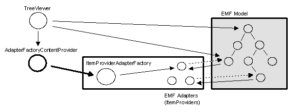
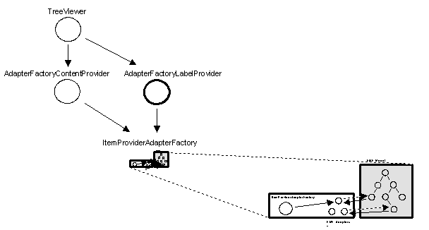
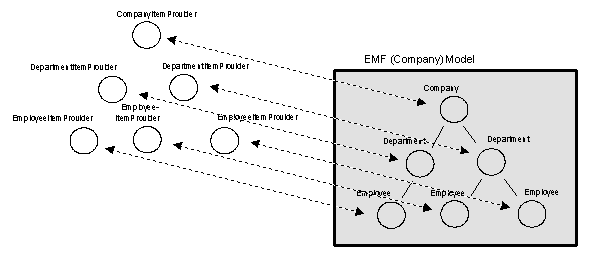
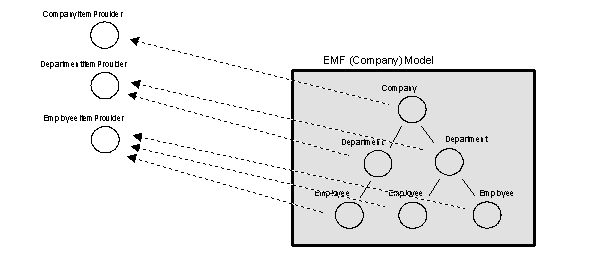
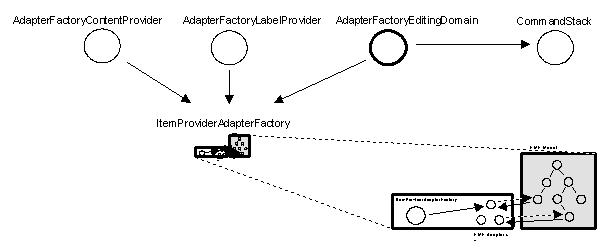
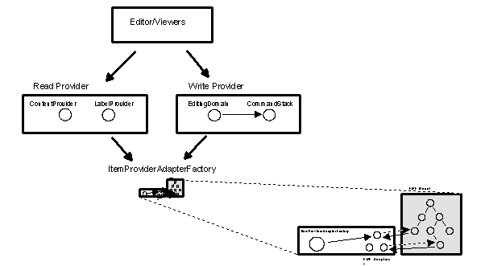

Last updated: June 1, 2004
This document assumes familiarity with basic EMF (Eclipse Modeling Framework) concepts. For more information on EMF, refer to the EMF Overview.
Introduction
Displaying EMF Objects in JFace Viewers
Item Provider Implementation Classes
Modifying EMF Models Using Commands
Using the EMF.Edit Code Generator
If you have an EMF-based model that you've generated code for using the EMF generator, and you are now ready to add user interfaces to your model and code, you can use the EMF.Edit framework to make your job easier.
EMF.Edit is an Eclipse framework that includes generic reusable classes for building editors for EMF models. It provides:
This paper gives an overview of the basic concepts of the EMF.Edit frameowrk and generator tool. For more in-depth information, you can refer to the documentation for the framework classes, which covers in detail their specific behaviors and capabilities.
The Eclipse user interface framework (JFace) includes a set of reusable viewer classes (for example TreeViewer, TableViewer) for displaying structured models. Rather than requiring the model objects being viewed to adhere to some specific protocol (that is, implement some specific interface), JFace viewers work with any kind of object (that is, any java.lang.Object subclass). This is possible because the viewers, instead of navigating the model objects directly, access the model objects through an adapter object called a content provider.
Each viewer class uses a content provider that implements a specific provider interface. For example, a TreeViewer uses a content provider that implements the following interface:
public interface ITreeContentProvider ...
{
public Object[] getChildren(Object object);
public Object getParent(Object object);
...
}
The basic structure is shown in the following diagram:

As far as the TreeViewer is concerned it is displaying a tree of objects (it calls them items) on the screen, all of which, except the input (root) object, are provided to it by calling getChildren() on its content provider.
Other kinds of viewers are handled similarly, although each viewer requires the content provider to implement its specific interface. Although all of the viewer interfaces are different, a content provider can often implement several of them at once, allowing the same content provider class to be used for many kinds of viewers.
The EMF.Edit framework provides a generic content provider implementation class that can be used to provide content for EMF models. Class AdapterFactoryContentProvider implements the content provider interfaces by delegating to EMF adapters that know how to navigate the model objects (items) for the viewers. For example, the EMF adapter class used to support a tree viewer would implement the following EMF.Edit interface:
public interface ITreeItemProvider
{
public Collection getChildren(Object object);
public Object getParent(Object object);
...
}
Notice the similarity of this interface to the content provider interface ITreeContentProvider described above. The AdapterFactoryContentProvider implements the content provider interface by locating and then delegating to an adapter (implementing the item provider interface) for the required item. The shift in terminology from objects to items is deliberate: from the viewer's point of view, they are items, not objects.
The EMF picture looks like this:
Note: you can automatically generate an ItemProviderAdapterFactory and ItemProvider classes for a given EMF model using the generator provided with the EMF.Edit framework. More about this later.
The AdapterFactoryContentProvider is constructed with an adapter factory which, like any other EMF adapter factory, serves to create and locate adapters of a specific type (ItemProviders in this case). The content provider services a request like getChildren() by calling adapt(item) on the ItemProviderAdapterFactory, which will create or return the ItemProvider (adapter) for the specified item. It then simply delegates to the getChildren() method of the required interface (in this case, ITreeItemProvider).
The getChildren() method in AdapterFactoryContentProvider looks something like this:
public Object[] getChildren(Object object)
{
ITreeItemContentProvider adapter =
(ITreeItemContentProvider)
adapterFactory.adapt(object, ITreeItemContentProvider.class);
return adapter.getChildren(object).toArray();
}
This same pattern is used for all of the content provider methods. As stated previously, the AdapterFactoryContentProvider does nothing more than simply delegate content provider methods to the specific item provider (adapter) that knows how to service the request.
In the getChildren() method above, the object being passed to adapterFactory.adapt() is a simple java.lang.Object (not an org.eclipse.emf.ecore.EObject). This is an important feature of the EMF.Edit framework. The framework has been carefully designed to accommodate views on EMF models that may be different from the model itself (that is, views that suppress objects or include additional, phantom, objects). To allow this mixture of EMF and non-EMF objects, the framework base class for adapter factories provides an implementation of adapt() that works something like this:
public Object adapt(Object object, Object type)
{
if (object instanceof Notifier)
return this.adapt((Notifier)object, type);
else
return object;
}
If the specified object is not an EMF Notifier[1] , it returns the object itself. With this design, an item provider that wants to add non-EMF items to a view can simply return (for example, from its getChildren() method) any non-EMF object it wants. As long as the returned object implements the viewer's required item provider interface (for example, ITreeItemProvider) it will be treated like all the other EMF items.
This aspect of the design highlights why we prefer to call the provider/adapter classes item providers instead of adapters. In nontrivial applications, the view model (that is, the one provided by the viewer's content provider) will often be a mixture of "real" (EMF) model objects whose item providers also happen to be (EMF) adapters, and "phantom" objects whose item providers are the objects themselves. So, while all of the adapters are also item providers, the reverse is not necessarily true.
In the previous sections we described how JFace viewers use a content provider to get their content items. A similar approach is used for getting the label image and text for the items being displayed by a viewer. Instead of asking the items themselves for their labels, a viewer uses another object called a label provider (similar to a content provider). A TreeViewer, for example, delegates to an object implementing the ILabelProvider interface to get the labels of the items in the tree.
The EMF.Edit framework uses the same mechanism for implementing label providers for EMF models as it uses for providing the content. A generic label provider implementation class, AdapterFactoryLabelProvider (working exactly like AdapterFactoryContentProvider), delegates the ILabelProvider interface to the item providers for the model (the same item providers that provide the content). The expanded picture looks like this:
The content and label provider can (and usually will) delegate to the same adapter factory and, consequently, the same item providers. Just as for the content provider, the item providers are where the work actually gets done.
Using the EMF.Edit provider classes, a user might construct a TreeViewer for some EMF model as follows:
myAdapterFactory = ... treeViewer = new TreeViewer(); treeViewer.setContentProvider(new AdapterFactoryContentProvider(myAdapterFactory)); treeViewer.setLabelProvider(new AdapterFactoryLabelProvider(myAdapterFactory));
This TreeViewer can then be displayed in, for example, an editor window in the usual (JFace prescribed) way.
You might be thinking this all seems quite trivial so far, but only because all we've shown is how to delegate to somebody else (that is, the adapter factory). We haven't implemented any of the methods yet, we've just delegated them away. However, the method implementation is supported by EMF.Edit, which includes a code generator that generates most of the item provider and factory code for you. Before we get into that, we'll first take a look at how item providers do their job.
As shown in the previous section, the real work of providing content for EMF models is done by the item provider adapters attached to the model. The number and types of ItemProvider adapters in the previous diagram was left intentionally vague. This is because the EMF.Edit framework supports two different patterns for the item provider adapters:
The item providers for a given model can be implemented with either of these patterns or with a mixture of them both.
With the first pattern, every object in a model has a one-to-one correspondence with its adapter. Each adapter has a pointer (called target) to the one-and-only object it's adapting.
The picture looks like this:
As shown, this pattern doubles the number of objects in the application, and therefore only makes sense in applications where the instances are needed to carry additional state. That's why we call it the Stateful pattern.
A better approach, that avoids most of the extra objects, is the Singleton pattern. With this pattern we use a single item provider adapter for all the items of the same type. It looks like this:
In this picture, the objects have adapter pointers, as usual, but the item providers (which are shared) have no pointers back to the objects. If you remember the tree item provider interface that we looked at previously in the content provider section, you may have noticed that all the methods took an extra argument (an object):
public interface ITreeItemProvider
{
public Collection getChildren(Object object);
public Object getParent(Object object);
...
}
The object argument was added to each item provider interface specifically to support this pattern. In the Stateful case, this object will always be the same as the adapter's target.
Another question you may be asking yourself, is why don't we support a "true" Singleton adapter pattern - that is, exactly one adapter for all the objects? The answer is simply that while it is another possible pattern (compatible with the EMF.Edit framework)[2] , we discourage it because a completely dynamic implementation, although simple, is difficult to customize (without lots of messy instanceof() checks). The alternative of having typed item provider classes, whose inheritance hierarchy mirrors the model's, provides a convenient dispatch point for implementing nice clean object-oriented view code for a model.
So far we've only shown how to view EMF models using content and label providers. Another feature of the EMF.Edit framework is its support for command-based editing of a model. We use the term "editing" to mean undoable modification, as opposed to simple "writing" of a model.
The EMF.Edit interface EditingDomain is used to provide editing access to an EMF model. Another EMF.Edit implementation class, AdapterFactoryEditingDomain, works like the content and label providers by delegating its implementation to the item providers (through the ItemProviderAdapterFactory):
As shown, it also provides access to a command stack through which all modifications to the model will be made. The editing domain provides two fundamental services:
The best way to think about an editing domain is as the modification or write provider to the model, while the content and label providers are the viewing or read provider. Here's the big picture:
Let's look at a simple example of modifying a model.
Assume class Company has a one-to-many reference, named departments, to class Department. To remove a department from the company (to implement, for example, an editor delete action) we could simply write the following code:
Department d = ... Company c = ... c.getDepartments().remove(d);
Although simple, this code does nothing more than simply make the modification.
If instead, we use the EMF.Edit remove command (org.eclipse.emf.edit.command.RemoveCommand) to remove the department, we would write the following:
Department d = ...
Company c = ...
EditingDomain ed = ...
RemoveCommand cmd =
new RemoveCommand(ed, c, CompanyPackage.eINSTANCE.getCompany_Departments(), d);
ed.getCommandStack().execute(cmd);
Deleting the department this way has several advantages:
Using commands this way, pervasively, is the way to enable all kinds of function that the EMF.Edit framework can give you.
In the previous example we created a RemoveCommand using a simple new call. This worked fine, but is not very reusable; the code fragment is doing a very specific thing, removing a department from a company. If instead we want to write, for example, a reusable delete action capable of deleting any kind of object, we can do that by using the EditingDomain to help with the job.
The EditingDomain interface contains (among other things) a command factory method, createCommand(), that can be used, instead of new, to create commands:
public interface EditingDomain
{
...
Command createCommand(Class commandClass, CommandParameter commandParameter);
...
}
To use this method to create a command you would first need to create a CommandParameter object, set command parameters into it, and then call the create method, passing it the desired command class (for example, RemoveCommand.class) and the parameters.
Rather then making clients go through all that, we use a convention of providing static convenience create() methods in every command class. Using the static create() method, you can create and execute a RemoveCommand like this:
Department d = ... EditingDomain ed = ... Command cmd = RemoveCommand.create(ed, d); ed.getCommandStack().execute(cmd);
As you can see, this is just a small syntactic change (RemoveCommand.create() instead of new RemoveCommand). But there are fundamental differences. We only passed one argument (that is, the object being removed), aside from the editing domain, instead of the three arguments previously. Notice how this piece of code can now be used to remove any kind of object. By delegating the creation of the command to the editing domain, we're letting it fill in the missing arguments.
To understand how it all works, let's follow through with the RemoveCommand.create() call. As stated previously, the static create() method is just a convenience method that delegates to the editing domain something like this:
public static Command create(EditingDomain domain, Object value)
{
return domain.createCommand(
RemoveCommand.class,
new CommandParameter(null, null, Collections.singleton(value)));
}
The AdapterFactoryEditingDomain then takes the request and passes it along to an item provider using the standard delegation pattern (as AdapterFactorContentProvider delegated getChildren() earlier):
public Command createCommand(Class commandClass, CommandParameter commandParameter)
{
Object owner = ... // get the owner object for the command
IEditingDomainItemProvider adapter =
(IEditingDomainItemProvider)
adapterFactory.adapt(owner, IEditingDomainItemProvider.class);
return adapter.createCommand(owner, this, commandClass, commandParameter);
}
Note: if you look at the actual createCommand() method you will notice that it's actually considerably more complicated. That's because it's designed to also handle, among other things, deleting collections of objects at once. This is, nevertheless, all it's doing conceptually.
The createCommand() method uses an owner object to access the item provider to delegate to (that is, the owner is used in the adapterFactory.adapt() call). The owner in our example will be the company object (that is, the parent of the department being removed). The editing domain determines the owner by calling the getParent() method on the item provider of the object being deleted.
The effect of all this is that the method createCommand() is finally called on the item provider of the parent of the object being removed (that is, the CompanyItemProvider for company c in the original code fragment). So, the CompanyItemProvider could implement createCommand() by doing something like this:
public class CompanyItemProvider ...
{
...
public Command createCommand(final Object object, ..., Class commandClass, ...)
{
if (commandClass == RemoveCommand.class)
{
return new RemoveCommand(object,
CompanyPackage.eINSTANCE.getCompany_Departments(),
commandParameter.getCollection());
}
...
}
}
This would get the job done, but there is a better way.
Every item provider class (that is also an EMF adapter) extends from an EMF.Edit convenience base class, ItemProviderAdapter, which provides a default implementation of, among other things, createCommand(). It implements createCommand() for all the standard commands provided by the EMF.Edit framework by calling out to a few simple methods (which are used for more than just this purpose) that are implemented in the item provider subclasses. This is an example of the Template Method design pattern.
To make our RemoveCommand example work, CompanyItemProvider only needs to implement the following method:
public Collection getChildrenFeatures(Object object)
{
return Collections.singleton(CompanyPackage.eINSTANCE.getCompany_Departments());
}
As shown, this method returns the one or more features (in this case, only the deparments reference) that are used for referencing children of the object. After calling this method, the default implementation of createCommand() will then figure out which feature to use (if more than one is returned) and create the RemoveCommand with the right one.
Another advantage of creating commands through an editing domain is that it allows us to plug in different subclasses or completely different implementations of standard commands and have standard editors just pick them up. For example, assume that we want to do some extra cleanup whenever we remove a department from a company. The simplest way to achieve that might be to create a subclassof RemoveCommand called RemoveDepartmentCommand like this:
public class RemoveDepartmentCommand extends RemoveCommand
{
public void execute()
{
super.execute();
// do extra stuff ...
}
}
That part's easy enough.
Now, if our editor uses the static RemoveCommand.create() method (which calls editingDomain.createCommand()) instead of new RemoveCommand(), then we can easily substitute our RemoveDepartmentCommand for the standard RemoveCommand by overriding createCommand() in the item provider like this:
public class CompanyItemProvider ...
{
...
public Command createCommand(final Object object, ...)
{
if (commandClass == RemoveCommand.class)
{
return new RemoveDepartmentCommand(...);
}
return super.createCommand(...);
}
}
Actually, if the command we want to specialize is one of the predefined ones (like RemoveCommand), the substitution is even easier because the default implementation of createCommand() dispatches the creation of each command to command-specific convenience methods, something like this:
public Command createCommand(final Object object, ...
{
...
if (commandClass == RemoveCommand.class)
return createRemoveCommand(...);
else if (commandClass == AddCommand.class)
return createAddCommand(...);
else ...
}
So, we could have created our RemoveDepartmentCommand more simply by just overriding createRemoveCommand(), instead of the createCommand() method itself:
protected Command createRemoveCommand(...)
{
return new RemoveDepartmentCommand(...);
}
To summarize, the key point is that the editing domain is our hook to adjust command parameters, including the command class itself, so we can easily control the behavior of any editing command on our model.
One thing we haven't talked about yet is change notification. How do we get the viewers to refresh after a command changes something in the model? The answer is that it works using a combination of standard EMF adapter notification and a viewer refresh mechanism provided by EMF.Edit.
When constructed, an AdapterFactoryContentProvider registers itself as a listener (i.e. org.eclipse.emf.edit.provider.INotifyChangedListener) of its adapter factory (which implements the org.eclipse.emf.edit.provider.IChangeNotifier interface). The adapter factory in turn passes itself to every item provider it creates so it can be the central change notifier for the model. The AdapterFactoryContentProvider also records (in the inputChanged() method) the viewer for which it is providing content, so that it can update its viewer when it receives a change notification.
The following diagram shows how a change in an EMF model object (for example, changing a company name) will make its way, through the adapter factory, back to the viewers of the model.
Whenever an EMF object changes state, the method notifyChanged() is called on all the object's adapters, including the item providers (in this case, CompanyItemProvider). The notifyChanged() method in the item provider is responsible for determining whether each event notification should be passed on to the viewer, and if so, what type of update it should result in.
To do so, it wraps interesting notifications in a ViewerNotification, a simple implementation of interface IViewerNotification. This interface extends the basic Notification interface like this:
public interface IViewerNotification extends Notification
{
Object getElement();
boolean isContentRefresh();
boolean isLabelUpdate();
}
These methods specify which item in the viewer to update, whether to refresh the content under that element, and whether to update the label of that element. Since the item provider determines the children and label for an object, it must also determine how to efficiently update the viewer.
The notifyChanged() method in class CompanyItemProvider looks like this:
public void notifyChanged(Notification notification)
{
...
switch (notification.getFeatureID(Company.class))
{
case CompanyPackage.COMPANY__NAME:
fireNotifyChanged(new ViewerNotification(notification, ..., false, true));
return;
case CompanyPackage.COMPANY__DEPARTMENT:
fireNotifyChanged(new ViewerNotification(notification, ..., true, false));
return;
}
super.notifyChanged(notification);
}
In this implementation, a change to the name attribute results in a label update, and a change to the department reference causes a content refresh. Any other change notifications have no effect on the viewer.
The fireNotifyChanged() method is a convenience method in class ItemProviderAdapter (the base class of all the item provider adapters) which simply forwards the notification to the adapter factory[3] . The adapter factory (change notifier) proceeds to dispatch the notification to all its listeners (in this example, just the tree viewer's content provider). Finally, the content provider updates the viewer, as directed by the notification.
EMF models are often tied together by cross-model references. Whenever you need to build an application to edit or display objects that span more than one EMF model, you'll need an adapter factory capable of adapting the union of the objects from the two (or more) models.
Often, you already have adapter factories for the individual models and all that you need is to glue them together. Another EMF.Edit convenience class, ComposedAdapterFactory, can be used for this purpose:
A ComposedAdapterFactory is used to provide a common interface to other adapter factories, to which it simply delegates its implementation.
To set up a composed adapter factory, you would write something like this:
model1AdapterFactory = ... model2AdapterFactory = ... ComposedAdapterFactory myAdapterFactory = new ComposedAdapterFactory(); myAdapterFactory.addAdapterFactory(model1AdapterFactory); myAdapterFActory.addAdapterFActory(model2AdapterFactory); myContentProvider = new AdapterFactoryContentProvider(myAdapterFactory); ...
Note: a step-by-step tutorial for generating an EMF model, as well as an EMF.Edit editor, can be found in Tutorial: Generating an EMF Model.
Given an EMF model definition, the EMF.Edit code generator can produce a fully functional editor tool that will allow you to view instances of the model using several common viewers and to add, remove, cut, copy, and paste model objects, or modify the objects in a standard property sheet, all with full undo/redo support.
The EMF.Edit generator produces complete working plug-ins that include the following:
Once generated, the editor should run. It will come up, but it may or may not be working as you expected (that is, the default choices that the generator made may have been inappropriate for your model). It should, however, be pretty easy to tweak the generated code in a few places to quickly get a basic working editor up and running.
The following takes a closer look at some of the more interesting generated classes.
The generated ItemProviderAdapterFactory is a simple subclass of the generated AdapterFactory class that you got when you generated your EMF model.
Note: the generated EMF adapter factory creates adapters by dispatching to a type-specific create() method that subclasses (like ItemProviderAdapterFactory) are required to override. The EMF adapter factory (for example, ABCAdapterFactory) uses another generated class, (ABCSwitch), to implement the dispatch efficiently.
When using the Stateful pattern, the adapter factory create methods simply return a new object like this:
class ABCItemProviderAdapterFactory extends ABCAdapterFactoryImpl
{
...
public Adapter createCompanyAdapter()
{
return new CompanyItemProvider(this);
}
...
}
If, instead, the Singleton pattern is used, the adapter factory also keeps track of the singleton instance and returns it for each call:
protected DepartmentItemProvider departmentItemProvider;
public Adapter createDepartmentAdapter()
{
if (departmentItemProvider == null)
{
departmentItemProvider = new DepartmentItemProvider(this);
}
return departmentItemProvider;
}
For each class in the model, a corresponding item provider class is generated. The generated item providers mix in all the interfaces needed to support the standard viewers, commands, and the property sheet:
public class DepartmentItemProvider extends ...
implements
IEditingDomainItemProvider,
IStructuredItemContentProvider,
ITreeItemContentProvider,
IItemLabelProvider,
IItemPropertySource
{
...
}
If a model class is a root (that is, it has no explicit base class) then the generated item provider will extend from the EMF.Edit item provider base class, ItemProviderAdapter:
public class EmployeeItemProvider extends ItemProviderAdapter ...
If, instead, the model class inherits from a base class, then the generated item provider will extend from the base item provider like this:
public class EmployeeItemProvider extends PersonItemProvider ...
For a multiply inheriting class, the generated item provider will extend from the first base class's item provider (as in the single inheritance case) and it will implement the provider function for the rest of the base classes.
If you look at the generated item provider classes, you'll notice that a lot of their function is actually implemented in the item provider base class. The most important functions of the generated item provider subclasses are:
The generated Editor and ModelWizard show how to put all the other generated pieces together with standard JFace components to produce a working editor.
The ModelWizard can be used to create new resources of the model's type. If instead, you already have a resource that was created some other way, you can import it into your desktop workspace and launch the editor on it, bypassing the ModelWizard completely.
[1] Notifier is the base interface in EMF for objects that can register adapters and send notifications to them. It is extended by EObject, the base interface for all model objects.
[2] Actually, EMF adapter factories are inheritance driven, so you can choose to use a base adapter to handle subclasses at any level in your model, EObject being the extreme case.
[3] In addition to the adapter factory, which acts as the change notifier for viewers, an ItemProviderAdapter can also have other (direct) listeners which are also called in ItemProviderAdapter.fireNotifyChanged().